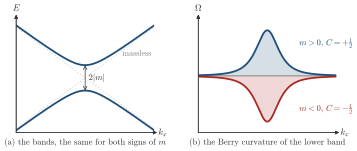

Advanced Quantum Materials 2027 · All lectures · Lecture notes
Session 3. Topological Band Structure Theory
3.10a Chern insulators without Landau levels from a gapped Dirac cone
Now we come back to the question from the beginning of the session. A Chern insulator needs a broken time-reversal symmetry. In fact, one can show directly from (3.4) that \(\sigma_{xy}\equiv 0\) whenever time-reversal symmetry holds, since time reversal changes the sign of the Berry curvature. However, nothing in the derivation of the Chern number required a magnetic field or Landau levels. So the question is if we can obtain a finite Chern number from an ordinary lattice band structure, using only terms that break time-reversal symmetry and that are entirely inside the lattice itself.
The method is to look for a lattice that has a massive Dirac equation in its low-energy expansion. Several two-dimensional lattices have massless Dirac points in their band structure, such as the honeycomb lattice, the kagome lattice and a square lattice with \(\pi\)-flux. This is the same Dirac cone that we derived for graphene in Section 2.11. Close to one such point, the low-energy Hamiltonian has the form
\[H(k) = k_x\,\sigma_x + \lambda\, k_y\,\sigma_y + m\,\sigma_z, \tag{3.7}\]
with \(\lambda = \pm 1\) fixed by the chirality of the lattice at this Dirac point, and \(m\) a mass term that opens a gap, \(E_\pm(k) = \pm\sqrt{k_x^2+k_y^2+m^2}\). We compute the Berry curvature of the lower band and integrate it, with the same procedure as in (3.4) but now over the small region of momentum space where the curvature is concentrated. This gives the Chern number of this single gapped Dirac cone,
\[C_{\text{Dirac}} = \frac{1}{2}\,\mathrm{sgn}(m)\,\mathrm{sgn}(\lambda). \tag{3.8}\]
Let us see what (3.8) means for one cone, in Schematic 3.8. The bands do not know the sign of \(m\), but the Berry curvature does.

The half-integer in (3.8) is not an inconsistency. A real lattice always has an even number of Dirac points related by time-reversal symmetry, and the honeycomb lattice has two, which are usually called \(K\) and \(K'\). Only the sum of their contributions needs to be an integer.
A massive Dirac cone with \(\lambda=+1\) has Chern number \(+\tfrac12\) for \(m>0\). What is its Chern number for \(m<0\) with the same \(\lambda\)?
Show the answers
- A. ✗ False
This is false. The jump of \(C\) from \(m>0\) to \(m<0\) is one, since the value goes from \(+\tfrac12\) to \(-\tfrac12\). The value of a single cone is never larger than \(\tfrac12\) in size.
- B. ✗ False
This is false. The curvature is proportional to \(m\), so it is odd in \(m\). The gap \(2|m|\) is the same for \(m=0.1\) and \(m=-0.1\), but the Berry curvature has the opposite sign and so does \(C\).
- C. ✓ True
This is true. The Chern number (3.8) is \(\tfrac12\,\mathrm{sgn}(m)\,\mathrm{sgn}(\lambda)\). It depends on the sign of the mass and not on its size, so a change of sign of \(m\) changes the sign of \(C\).

A lattice model has a single massive Dirac cone at low energy and no other states close to the gap. Can its filled band have \(\sigma_{xy}=e^2/2h\)?
Show the answers
- A. ✗ False
This is false. Take the two-band model with \(\mathbf d=(\sin k_x,\sin k_y,m+\cos k_x+\cos k_y)\) and \(m=-1.9\). It has one cone at \(\Gamma\) with mass \(0.1\), and its Chern number is \(|C|=1\). The curvature of the rest of the zone supplies the other half.
- B. ✗ False
This is false. The term \(m\sigma_z\) gives the spectrum \(\pm\sqrt{k^2+m^2}\) with a gap \(2|m|\) for a single cone. The reason is not the gap, but the integer quantization of \(C\) on a lattice.
- C. ✓ True
This is true. The Chern number of a filled band on a lattice is an integer. The half of (3.8) is completed by the rest of the zone. This is either a second cone, like \(K\) and \(K'\) in the honeycomb lattice, or the massive part of the band, as in the model above.
This is where the choice of the mass term matters, and we will work out the two natural choices explicitly, because they give qualitatively different physics. At \(K\) and \(K'\) the chirality \(\lambda\) has opposite sign, since the two points are time-reversal partners. Let us first open the gap with a staggered sublattice potential, which raises the onsite energy on one honeycomb sublattice and lowers it on the other. This mass term is an ordinary scalar potential, so it has the same sign \(m\) at both \(K\) and \(K'\). From (3.8), the two Dirac points then give Chern numbers of opposite sign, \(+\tfrac12\,\mathrm{sgn}(m)\) and \(-\tfrac12\,\mathrm{sgn}(m)\), which cancel. The result is \(C=0\), which is an ordinary insulator that is topologically trivial, and this is the same kind of gap as in boron nitride.
Try it. Run the cell with h.add_sublattice_imbalance(0.5) and look at the Berry curvature, which has opposite colors around K and K’. Change the value to -0.5. Both colors are exchanged, and h.get_chern(nk=60) still gives 0, as the cancellation of (3.8) predicts.
- In Section 3.10b the second choice of the mass term, the Haldane coupling, makes the two halves add.
- In Section 4.10 the same Dirac Hamiltonian is put in a magnetic field, and its Landau levels include a level at zero energy.
- In Section 8.9 the square lattice with \(\pi\)-flux comes back, now for spinons, with Dirac points at half filling.